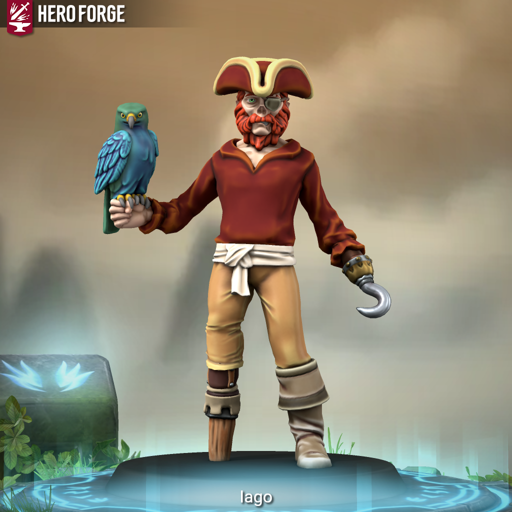

Iago - Is This Anything?

Meet Iago (he’s the bird one):
Born as a lowly crew member, Iago spent his days lost among barrels and bilges, barely noticed by the fearsome pirates around him. Everything changed the night he tried to swipe a gleaming trinket from his captain’s quarters… unaware that the captain was no ordinary man, but an ancient sea god hiding beneath mortal skin.
Caught in the act, Iago was transformed by the captain’s wrathful magic, becoming a colorful parrot and whisked away to the uttermost reaches of the sea, far from any hope of escape. With the crew never realizing what became of him, his old life simply vanished, erased by the waves and forgetfulness of pirate memory.
Struggling to communicate and prove his true identity, Iago spent years grappling not only with the limits of his new body but with the despair of being unheard and unrecognized. His first taste of magic came by accident: bursting with frustration, he found he could shift a small object – he nudged a coin across the deck with just an angry glance. At first, it was all harmless; tiny spells, little tricks, a flash of color or a whisper carried on the wind.
But each discovery led to greater power. Experimenting, Iago learned to create illusions, shift larger and larger items, and even speak words that others heard in their dreams. In time, this growing control, along with a desperate need for agency, led to a stunning breakthrough: the ability to animate a recently-passed dead body, and then eventually pilot the form of the human, blend into a crew, and discover the full extent of his pact-born gifts.
Now, Iago sails with the living, the curse behind him and ambition ahead, driven not only to reclaim the respect he never had, but hungering for the power he once dreamed of, never again content to be forgotten.